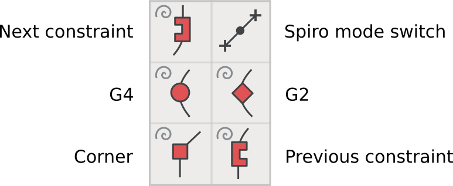

Рисование с Spiro
Spiro — это набор инструментов для проектирования кривых методом, альтернативным более традиционным кривым Bézier. Хотя это необязательно, FontForge можно установить и включить режим Spiro, который предлагает инструменты для создания кривых этого конкретного типа. Смотреть [“Установка FontForge”] для получения более подробной информации о том, как включить библиотеку Spiro в программу.
В рисовании Spiro используется другой подход, который может помочь создать кривые по-другому и решить проблемы с зачатием. Пожалуйста, поэкспериментировать!
Набор инструментов Spiro
В режиме Spiro доступны многие из тех же инструментов рисования, что и описанные в главе “Использование инструментов рисования FontForge”, но некоторые из них работают совсем по-другому, когда положение в режиме Spiro.

Существует пять различных типов точек Spiro:
- G4 точки, используемые для более плавной кривой
- G2 точки, используемые для более острой кривой
- Угловые точки, для резких угловых соединений
- Предыдущие точки ограничения, используемые, когда контур пути меняется с кривой на прямую линию.
- Следующие точки ограничения, используемые, когда путь меняется с прямой на кривую.
Рисование ‘S’ с помощью Spiro
Выполнив упражнение по рисованию ‘S’ с помощью Spiro, освоить Spiro.
Tip: Рисуя в режиме Spiro, всегда начинать с точки G4 или G2. Начинать с других типов точек в FontForge не очень удобно.
Начать с точки G4 в самой верхней точке вашего ‘S,’, за которой следует угловая точка, а затем еще одна угловая точка. Работать по часовой стрелке вокруг формы буквы.

Следовать с помощью G4, предыдущей точки ограничения и следующей точки ограничения.

Затем добавить еще одну точку G4, а затем еще две угловые точки.

Затем G4, за которым следует предыдущее ограничение, а затем следующее ограничение.

Затем добавить еще одну точку G4 и, наконец, закрыть фигуру в начальной точке, щелкнув по ней с помощью G4 point tool.

Теперь почти есть ‘S’! Начать перемещать точки, чтобы буква S выглядела так, как требуется.
Ой, что случилось?

Не волноваться — Spiro иногда делает забавные вещи. Просто нажать Undo, или продолжать менять точки, чтобы вернуть ситуацию в нужное русло.
Теперь видно что-то вроде этого:

Переключиться из режима Spiro обратно в режим Безье. Заметно, что на полученной кривой — много точек, возможно, захочется подчистить некоторые из них.

Чтобы очистить эти дополнительные точки, перейти в Element menu и выбрать Simplify > Simplify. Затем перейти в Element > Add Extrema. Наконец, перейти в Element > Round > To Int. После этих операций очистки видно что-то вроде этого:

Можно продолжить экспериментировать с Spiro mode, чтобы понять, в чем отличие от рисунка Bézier. Терминология другая, но, как и в случае с другими инструментами рисования и настройки FontForge, практика даст то, что требуется.